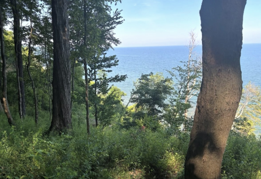
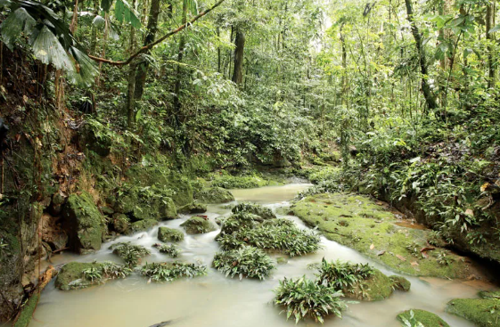
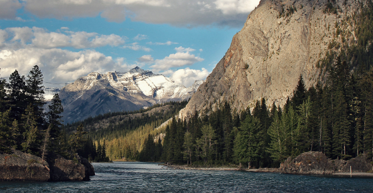
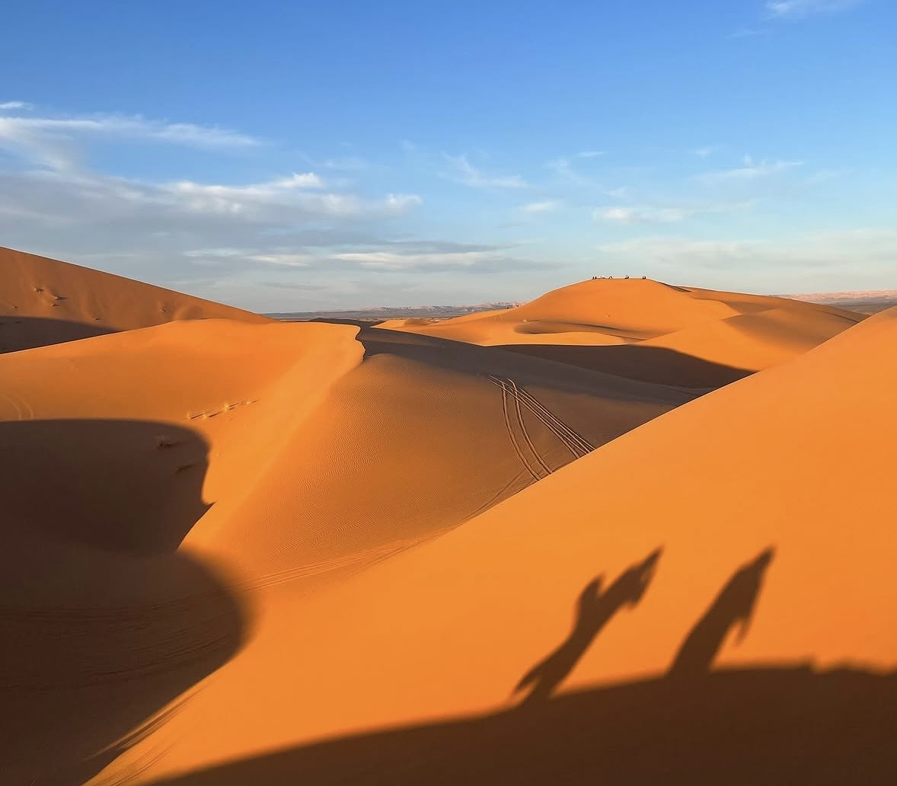
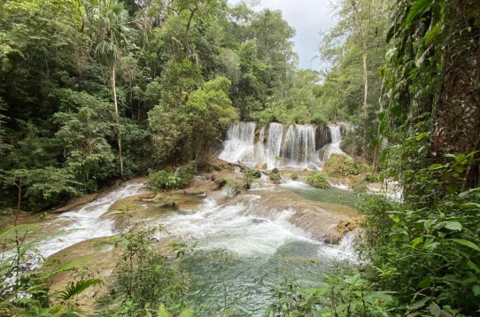

Mediterranean climates are known for having warm and dry weather, while temperate forests have more rainfall and seasonal changes.


Rainforests are hot and wet with dense vegetation with very diverse light forms while deserts are known for having very empty but colorfull land with dry heat.


Deserts receive very little rainfall, while rainforests have heavier rainfall that supports more plant life.